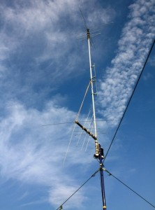

Любое предприятие – это мини-государство со своей иерархией, функциональностью и задачами. И вопрос безопасности здесь играет не меньшую роль, чем на уровне государства. Именно поэтому, начиная свой бизнес, обустраивая под него место на рынке, в ряду первоочередных задач фигурирует обеспечение безопасности предприятия, в том числе создание целого комплекса системы безопасности.
Цели создания системы безопасности:
- предотвращение хищения финансовых и материально-технических средств; 
- предупреждение утечки или уничтожения служебной информации;
- предотвращение нарушения работы технических средств;
- предотвращение угрозы на предприятии.
- обеспечение непрерывного функционирования предприятия;
- охрана жизнедеятельности и здоровья персонала.
Современные системы контроля и видеонаблюдения – это необходимость сегодняшнего дня, так как является залогом спокойствия. Вне зависимости от масштабов наблюдаемого объекта, мы готовы предл ожить техническое решение с учётом специфики этого объекта, будь то видеонаблюдение или комплекс систем безопасности. Компания «СтройПроектСервис» за свое время существования очень хорошо себя зарекомендовала на рынке. С нами работают самые крупные организации в городе, ценят наше качество услуг и надежность. Мы готовы рассмотреть и спроектировать объекты повышенной сложности.
Выбирая нас, вы находитесь под надежной защитой!
Сегодня наша компания готова предложить вам широкий спектр услуг:
- оптовые и розничные продажи, монтаж и техническое обслуживание систем безопасности;
- проектирование систем безопасности;
- разработка и производство электронных приборов и программных средств.
- Наша компания специализируется на продаже оборудования различного назначения от камер видеонаблюдения до сложных интегрированных комплексов:
- системы видеонаблюдения, в том числе, оборудование объектов IP-камерами наблюдения;
- охранная и пожарная сигнализация;
- системы контроля доступа, СКУД;
- интегрированные системы;
- радиосвязь
Охранно-пожарные сигнализации
Система охранно-пожарной сигнализации является неотъемлемой частью системы обеспечения безопасности современного здания.
Перед охранными системами стоит непростая задача — оставаясь максимально незаметными обеспечить высокую надежность. Они должны обеспечить предупреждение служб безопасности и правоохранительных органов о взломах и нарушениях на ранних стадиях проникновения.
Все охранные системы можно разделить на проводные и радиоканальные беспроводные. Но как радиоканальные, так и проводные охранные системы состоят из датчиков, центральных устройств, пультов управления и оповещателей.
Используются следующие виды охранных датчиков:
- Датчики движения
- Акустические датчики разбития стекла
- Контактные датчики (герконы)
- Вибрационные датчики